두 학년의 기말 시험지 51문항 전부를 교과서·학평·수능특강 Light 원문과 한 문장씩 대조했습니다.
1학년은 지문을 그대로 싣고 선지를 다시 썼고, 2학년은 지문 자체를 다시 썼습니다. 학년에 맞는 대비가 필요한 이유입니다.
1학년은 교과서·학평 지문을 원문 그대로 싣고 선지와 장치에서 변별했습니다(창작 2문항 7.3점 별도). 2학년은 수특 지문을 통째로 다시 썼습니다. 형제 학년인데 텍스트 전략이 정반대 — 같은 대비법이 통하지 않습니다.
두 학년 시험지에서 반복적으로 확인되는 출제 코드는 세 가지입니다.
24문항 전부를 교과서(미래엔)·학평 원문과 단어 단위로 대조했습니다.
지문이 단어·문장 단위로 얼마나 바뀌었는지까지 확인한 기록입니다.
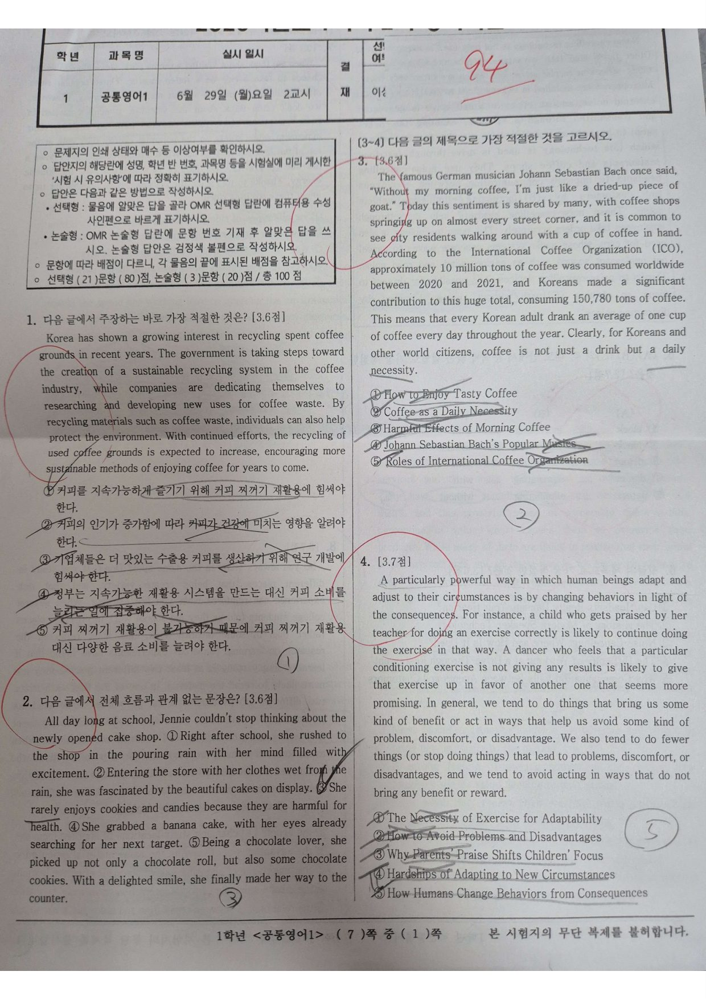
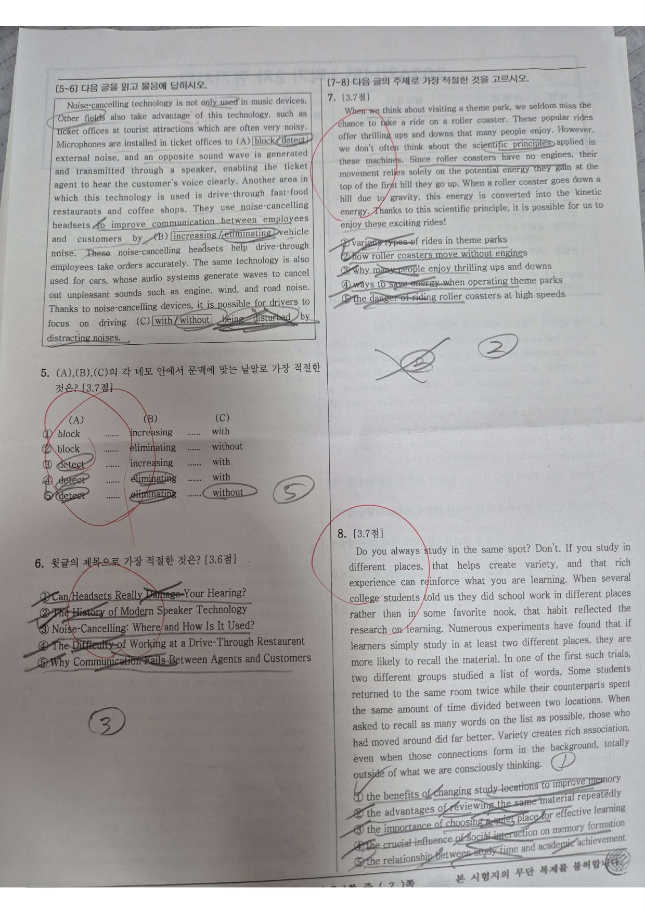
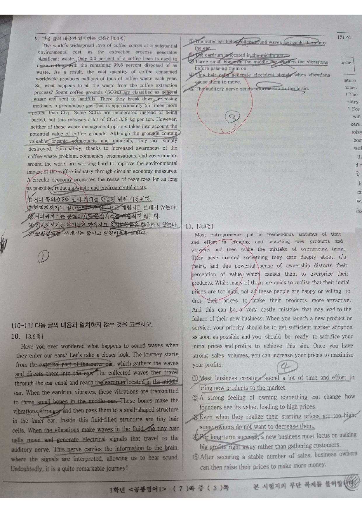
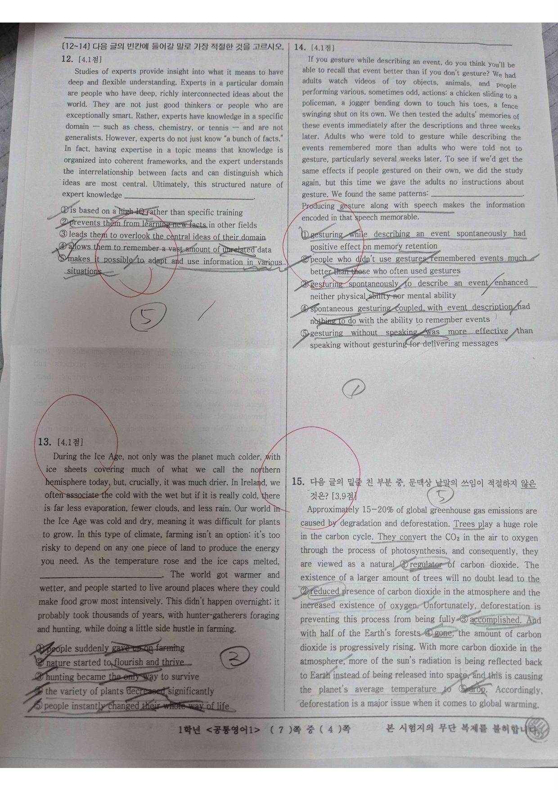
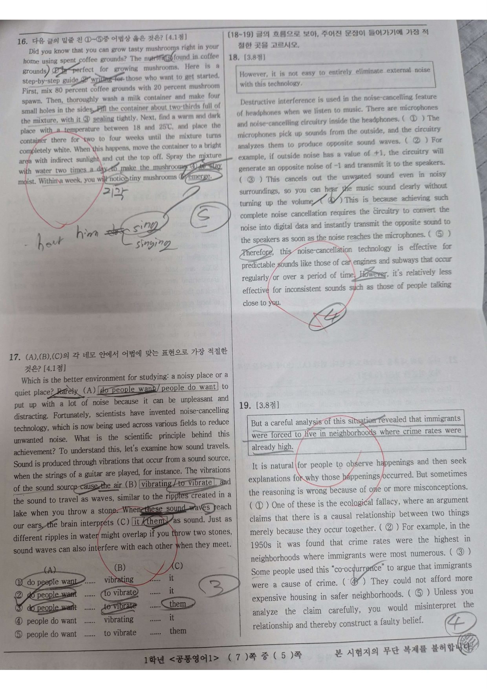
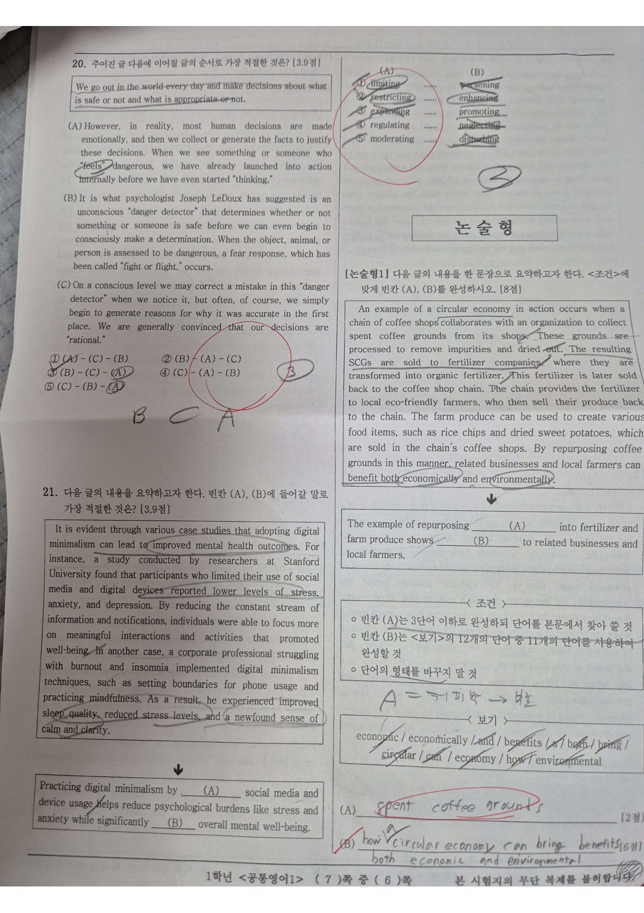
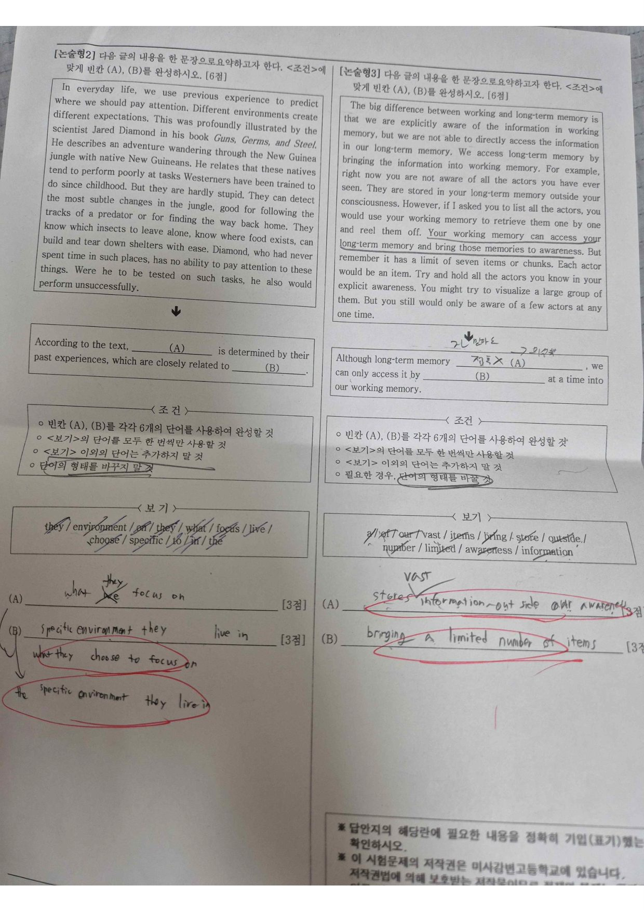
전 문항의 배점·출처를 교재·기출 원문과 축자 대조하고(단어 단위 diff 검증 포함), 배점은 이미지에서 독립 재판독해 교차 검산한 표입니다.
| 번호 | 배점 | 난이도 | 유형 | 물어보는 개념 | 출제 포인트 · 함정 | 어디서 왔나 |
|---|---|---|---|---|---|---|
| 1 | 3.6 | 기본 | 주장 | 필자 주장 파악 | 정답 ①은 문단 요지의 한국어 재진술, 오답 ②~⑤는 창작 | 교과서 4과 마지막 문단 — 원문 그대로 |
| 2 | 3.6 | 표준 | 무관 문장 | 글의 흐름 판단 | 4과 「with+명사+분사」 구문을 4회 이식한 출제자 창작 서사 | 출처 없음 — 4과 구문 연계 창작 |
| 3 | 3.6 | 기본 | 제목 | 제목 추론 | 마지막 문장 'not just a drink but a daily necessity'의 직접 재진술 | 교과서 4과 1문단 — 원문 그대로 |
| 4 | 3.7 | 표준 | 제목 | 제목 추론 | 정답 제목이 마지막 문장의 재진술 — 오답은 소재 어휘만 겹치는 선지 | 26년 6월 학평 34번 — 지문 원문 보존 |
| 5 | 3.7 | 기본 | 문맥 낱말 | (A)(B)(C) 낱말 선택 | detect·eliminating·without 3곳에 반의 오답만 병기, 지문 무변형 | 교과서 3과 4문단 — 원문+낱말 네모 |
| 6 | 3.6 | 기본 | 제목 | 제목 추론 | 교과서 소제목(Exploring the Technology…)의 재진술이 정답 ③ | 교과서 3과 4문단 — 원문 그대로 |
| 7 | 3.7 | 표준 | 주제 | 주제 파악 | 3과 「Thanks to ~, it is possible for A to-v」 구문을 복제한 창작(롤러코스터) | 출처 없음 — 3과 구문 연계 창작 |
| 8 | 3.7 | 표준 | 주제 | 주제 파악 | 지문 단어 변경 0건 — 요지를 새 영어 문장으로 재진술한 정답 ① | 26년 6월 학평 32번 — 지문 원문 보존 |
| 9 | 3.6 | 기본 | 내용 일치 | 세부 내용 확인 | 오답 ②~⑤ 전부 원문 서술의 극성 반전(한국어 선지) | 교과서 4과 2~4문단 — 원문 그대로 |
| 10 | 3.6 | 표준 | 내용 불일치 | 세부 내용 확인 | 영어 선지 재진술 속 정답 ③만 stronger→weaken 반전 | 교과서 3과 딥러닝 — 원문 그대로 |
| 11 | 3.8 | 표준 | 내용 불일치 | 세부 내용 확인 | 정답 ④만 지문 진술의 극성을 뒤집은 선지 — 나머지는 표면 일치 | 25년 6월 학평 32번 — 지문 원문 보존 |
| 12 | 4.1 | 킬러 | 빈칸 추론 | 빈칸 문장 추론 | 마지막 문장을 빈칸화, 정답 선지는 그 문장의 패러프레이즈로 재작성 — 원문 표현이 선지에 없음 | 25년 6월 학평 29번 — 지문 원문 보존·선지 재작성 |
| 13 | 4.1 | 까다로움 | 빈칸 추론 | 빈칸 어구 추론 | 지문 속 구를 빈칸화 — 유사 구문 선지의 정밀 대조가 필요 | 26년 6월 학평 36번 — 지문 원문 보존 |
| 14 | 4.1 | 까다로움 | 빈칸 추론 | 빈칸 문장 추론 | 콜론 뒤 결과 문장을 빈칸화 — 인과 연결 단서로 판단 | 26년 6월 학평 38번 — 지문 원문 보존 |
| 15 | 3.9 | 표준 | 어휘 적절성 | 문맥상 낱말 쓰임 | 지문 전체에서 단 1단어만 바꿔 물은 어휘 문항(rise→drop, 정답 ⑤) | 26년 6월 학평 39번 — 1단어 교체(어휘 장치) |
| 16 | 4.1 | 킬러 | 어법(옳은 것) | 어법 판단 | ①~④ 오류 삽입+문장 3곳 재작성, 정답 ⑤는 지각동사 원형 emerge | 교과서 4과 딥러닝 — 문장 재작성+어법 |
| 17 | 4.1 | 표준 | 어법(네모) | (A)(B)(C) 어법 선택 | 도치·cause+O+to-v·대명사 수일치, 지문은 무변형 | 교과서 3과 1~2문단 — 원문+네모 어법 |
| 18 | 3.8 | 표준 | 문장 삽입 | 글의 흐름·연결 | 도치 해제+'This is because' 신설 문장이 위치 ④의 단서 | 교과서 3과 3문단 — 문장 적출+연결 장치 |
| 19 | 3.8 | 표준 | 문장 삽입 | 글의 흐름·연결 | 지문 속 한 문장을 적출해 주어진 문장으로 사용 — 삽입 위치는 연결사 단서 | 25년 6월 학평 30번 — 지문 원문 보존 |
| 20 | 3.9 | 까다로움 | 글의 순서 | 단락 순서 배열 | 원문 한 문장을 but→However로 분할해 (C)→(A) 연결 단서 제작 | 26년 6월 학평 40번 — 지문만 떼어 순서로 |
| 21 | 3.9 | 까다로움 | 요약문 완성 | (A)(B) 요약 어휘 | 지문은 6쪽 좌하단·선지는 우상단의 2단 지그재그 편집 | 26년 6월 학평 35번 — 무관문장 삭제 후 요약으로 |
| 논1 | 8 | 킬러 | 요약문 완성(배열) | 요약문 단어 배열 | 보기 12개 중 11개만 사용 — economically를 버리고 economic을 살려야 함 | 교과서 4과 5문단 — 원문 그대로 |
| 논2 | 6 | 까다로움 | 요약문 완성(배열) | 요약문 단어 배열 | 보기에 previous·experience 없음 — 'pay attention' 개념을 focus로 바꿔 써야 함 | 25년 6월 학평 31번 — 요약문 배열 |
| 논3 | 6 | 까다로움 | 요약문 완성(배열) | 요약문 단어 배열 | '필요한 경우 형태를 바꿀 것' 조건 반전 — store→stores 굴절이 갈림길 | 26년 6월 학평 37번 — 요약문 배열 |
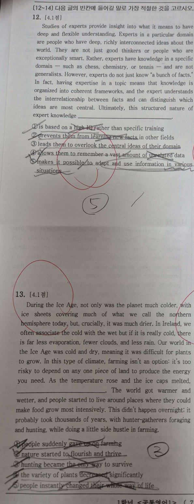
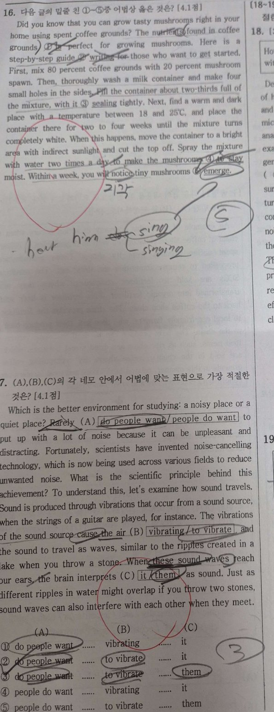
'학평 정답 번호 암기'는 다시 쓰인 선지 앞에서, '교과서 훑어 읽기'는 문장 단위 근거를 묻는 발문 앞에서, '논술형 감각 배열'은 조건 장치 앞에서 각각 멈춥니다. 이번 시험이 요구한 건 다른 종류의 훈련입니다.
27문항 전부를 교과서(미래엔)·수능특강 Light 원문과 단어 단위로 대조했습니다.
어느 지문이 어디서 왔고, 무엇이 어떻게 다시 쓰였는지까지 확인한 기록입니다.
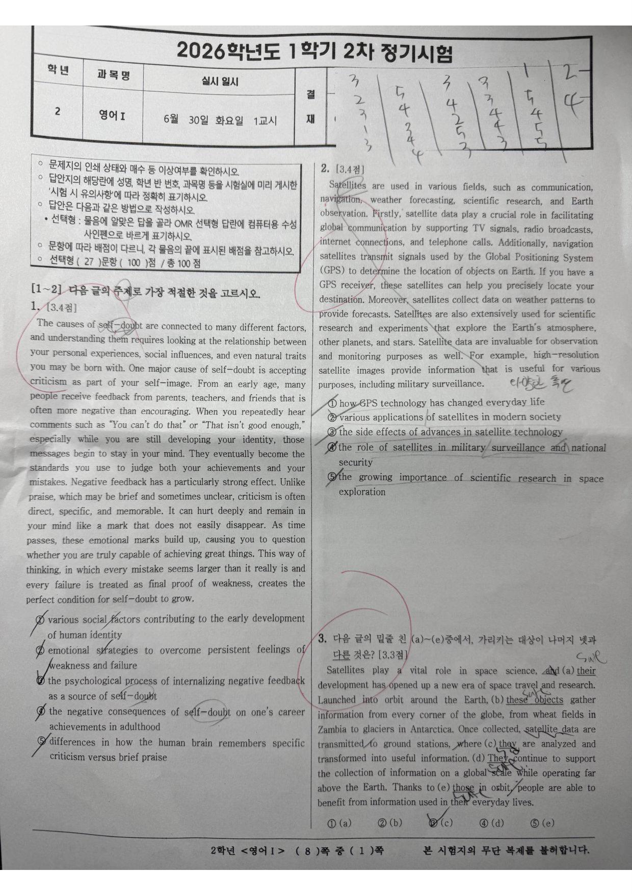
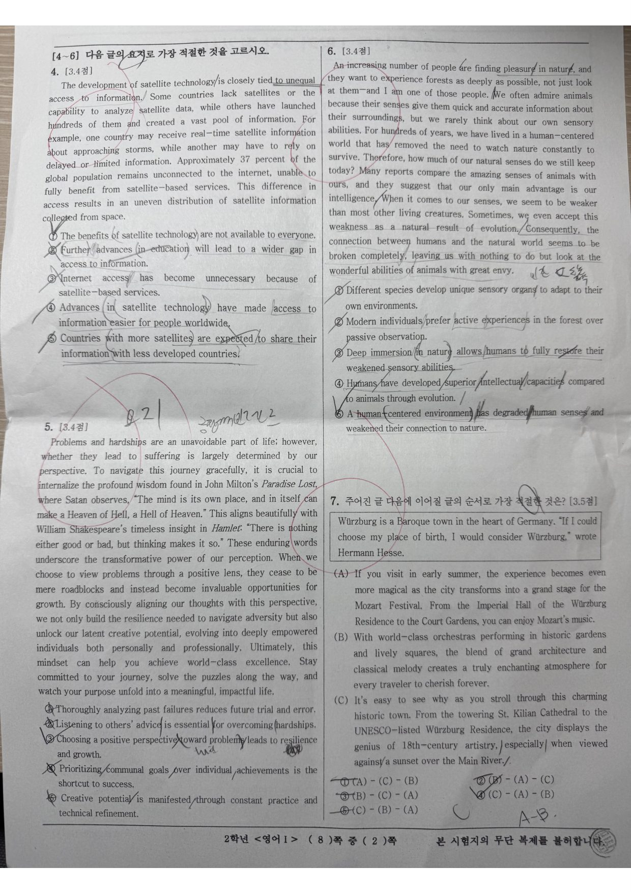
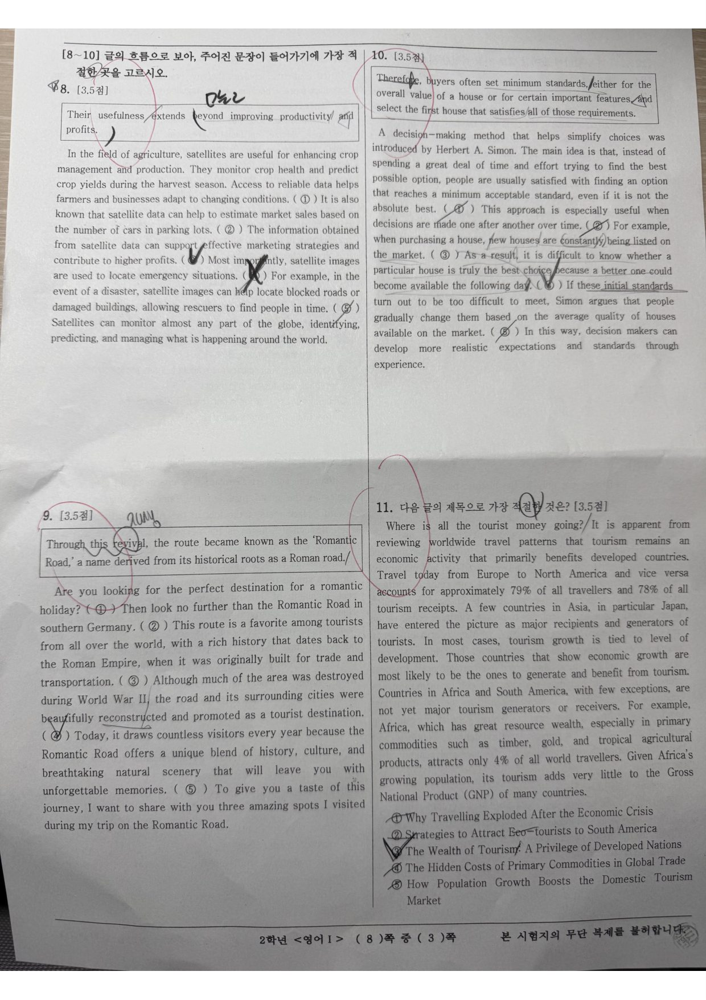
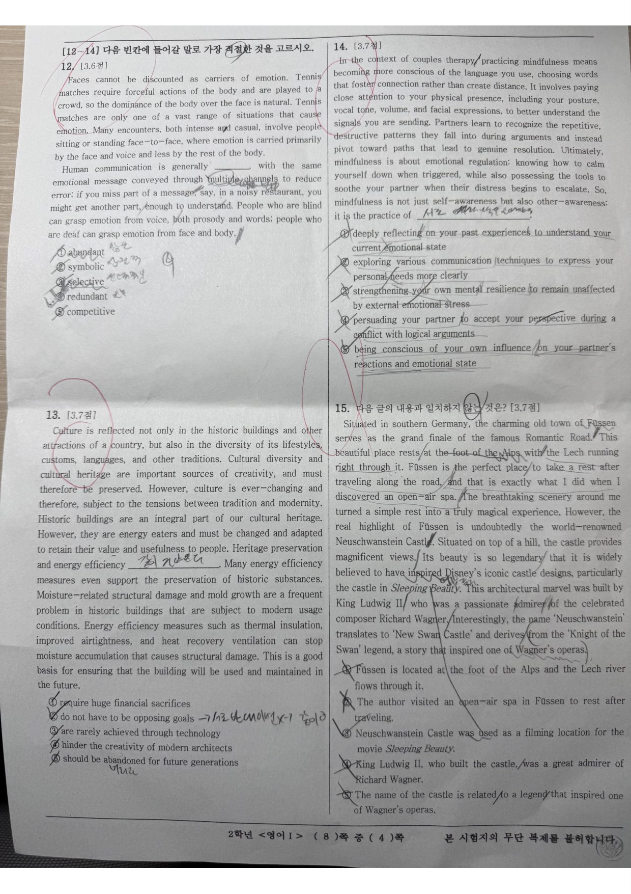
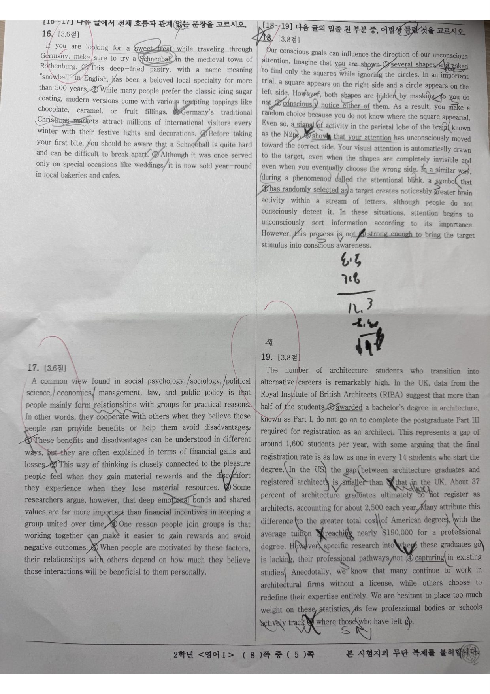
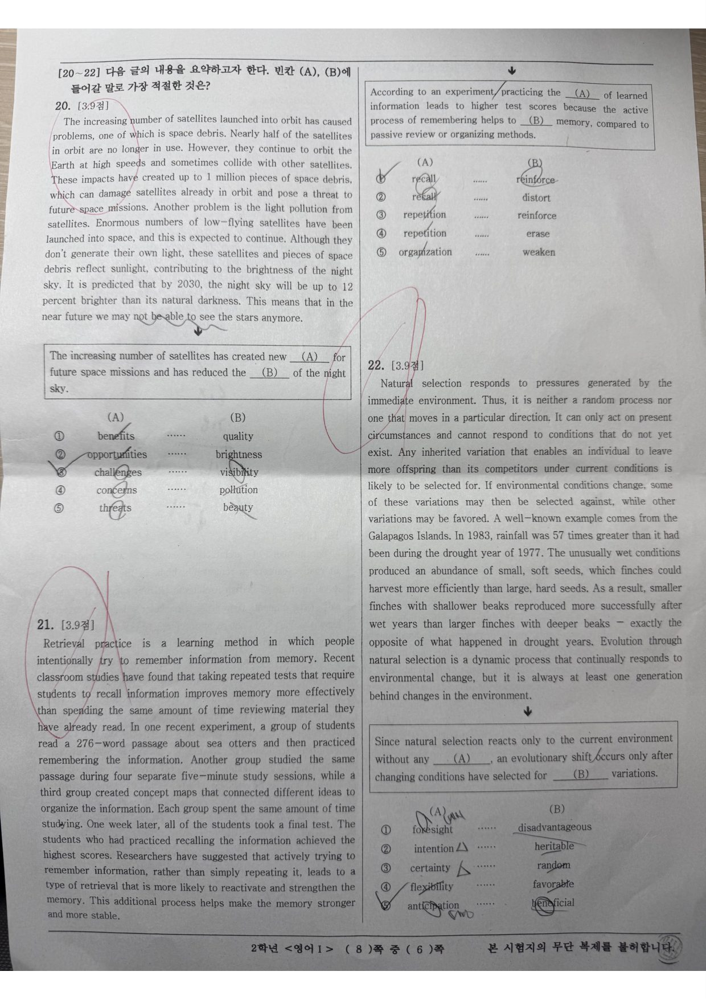
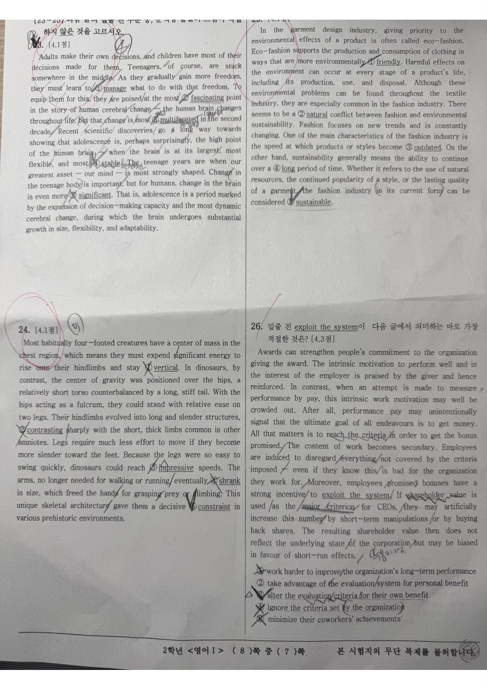
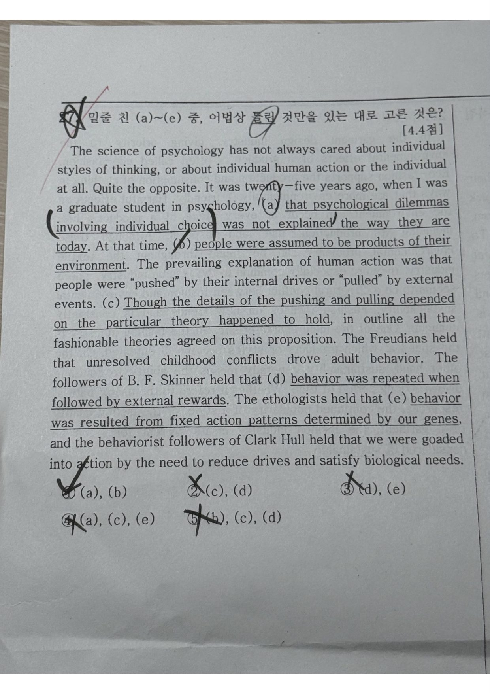
전 문항의 배점·출처를 교재·기출 원문과 축자 대조하고(단어 단위 diff 검증 포함), 배점은 이미지에서 독립 재판독해 교차 검산한 표입니다.
| 번호 | 배점 | 난이도 | 유형 | 물어보는 개념 | 출제 포인트 · 함정 | 어디서 왔나 |
|---|---|---|---|---|---|---|
| 1 | 3.4 | 표준 | 주제 | 자기의심의 형성 원인 | 전문 전면 패러프레이즈 — 정답 선지만 원문 용어(internalizing) 복원 | 수특 Light 미니1 15번 — 전면 패러프레이즈 |
| 2 | 3.4 | 기본 | 주제 | 위성의 다양한 용도 | 교과서 지문 중 유일한 무변형 문항(선지 포함) | 교과서 5과 본문3 — 원문 그대로 |
| 3 | 3.3 | 표준 | 지칭추론 | (a)~(e) 지시 대상 판별 | (c)만 satellite data — 수동태를 where절로 바꿔 선행사를 고정 | 교과서 5과 본문2 — 대명사 체인 개조 |
| 4 | 3.4 | 기본 | 요지 | 위성 기술과 정보 접근 불평등 | 원문 95% 유지 + 자작 예시문 1개 삽입, 요지 판단엔 영향 없음 | 교과서 5과 본문6 — 원문 대부분 보존 |
| 5 | 3.4 | 표준 | 요지 | 인용을 대하는 관점(Milton·Shakespeare) | 인용구만 원문 보존, 나머지는 전부 다시 씀 | 수특 Light 5강 1번 — 인용구 외 전면 리라이트 |
| 6 | 3.4 | 표준 | 요지 | 인간 감각 퇴화와 자연과의 단절 | 아이러니 표현을 중립어로 바꾼 전면 평이화 패러프레이즈 | 수특 Light 2강 6번 — 전면 패러프레이즈 |
| 7 | 3.5 | 까다로움 | 순서배열 | 뷔르츠부르크·모차르트 축제 | 두 본문을 통합 재조립 — 본문별 암기로는 분할 지점에서 혼란 | 교과서 4과 본문2+3 — 통합 축약 |
| 8 | 3.5 | 표준 | 문장삽입 | 위성의 농업·재난 분야 활용 | 주어진 문장 자체를 창작 — 수익→안전 화제 전환 자리가 정답 | 교과서 5과 본문4 — 창작 삽입문 |
| 9 | 3.5 | 까다로움 | 문장삽입 | 로맨틱 가도의 유래 | 상향 리라이트 + 지시어 this revival이 단서, ①·②가 오답 유인 | 교과서 4과 본문1 — 리라이트(본문7 표현 차용) |
| 10 | 3.5 | 까다로움 | 문장삽입 | Simon의 만족화 이론 | 어휘 전면 평이화로 연계 흔적 제거 — 지시어 연결로만 변별 | 수특 Light 2강 4번 — 전면 평이화 |
| 11 | 3.5 | 기본 | 제목 | 관광 수입의 편중 | 지문 무변형 — 오답 선지가 지문 속 단어를 하나씩 물고 있음 | 수특 Light 2강 1번 — 지문 무변형·자체 선지 |
| 12 | 3.6 | 표준 | 빈칸추론 | 감정 전달 채널의 중복성 | 원문 핵심어(redundant) 복원형 — 같은 어근 문장은 미리 삭제 | 수특 Light 10강 2번 — 핵심어 복원형 변형 |
| 13 | 3.7 | 표준 | 빈칸추론 | 유산 보존과 에너지 효율 | 지문은 유지, 주제문만 빈칸화 + 정답 선지는 동의어 치환 | 수특 Light 2강 2번 — 원문 유지·빈칸화 |
| 14 | 3.7 | 까다로움 | 빈칸추론 | 커플 치료의 마음챙김 | 전면 리라이트에 빈칸 구문까지 창작 — 원문 대조가 통하지 않는 고강도 변형 | 수특 Light 5강 2번 — 전면 리라이트+창작 빈칸 |
| 15 | 3.7 | 표준 | 내용불일치 | 퓌센·노이슈반슈타인 성 | 원문 '디자인에 영감'을 선지에서 '촬영지'로 바꿔 심음 | 교과서 4과 본문6 — 리라이트+왜곡 선지 |
| 16 | 3.6 | 표준 | 무관문장 | 슈네발 500년 전통 | 무관 문장 ③(크리스마스 마켓)을 창작해 삽입 | 교과서 4과 본문5 — 재서술+창작 무관문 |
| 17 | 3.6 | 까다로움 | 무관문장 | 집단 관계의 실리성 | 무관 문장이 however로 위장 — 문맥 역행 판단이 필요 | 수특 Light 미니1 14번 — 평이화+창작 무관문 |
| 18 | 3.8 | 까다로움 | 어법 | 정동사 결여·수동태 판별 | ③·④ 모두 비문 소지 — 이의제기 여지 | 수특 Light 미니1 16번 — 어법 장치 삽입 |
| 19 | 3.8 | 표준 | 어법 | 분사 태(capturing→captured) | ② that의 단복수 판별이 오답 유인 — 정답은 ④ 태 오류 | 수특 Light 5강 5-6번 — 어법 장치 삽입 |
| 20 | 3.9 | 기본 | 요약문 | 위성 기술의 도전 과제 | 지문 유지 — threat→challenge식 요약 어휘 매칭이 전부 | 교과서 5과 본문5 — 원문 유지·요약문 창작 |
| 21 | 3.9 | 표준 | 요약문 | 인출 연습과 기억 강화 | 전문어(reconsolidation)를 평이화 — recall/reinforce로 수렴 | 수특 Light 2강 3번 — 평이화 변형 |
| 22 | 3.9 | 까다로움 | 요약문 | 자연선택과 갈라파고스 핀치 | (A) foresight=anticipation 동의 처리, flexibility 배제가 승부처 | 수특 Light 미니1 13번 — 부분 변형 |
| 23 | 4.1 | 표준 | 어휘 | 청소년기 뇌의 가변성 | changeable 자리에 반의어 stable 치환(정답 ④) | 수특 Light 10강 4번 — 원문 밀착+어휘 장치 |
| 24 | 4.1 | 까다로움 | 어휘 | 공룡 이족보행의 이점 | 원문에 없는 창작 결론문에 constraint를 심음(정답 ⑤) | 수특 Light 5강 4번 — 변형+창작 결론문 |
| 25 | 4.1 | 표준 | 어휘 | 패션 산업과 지속가능성 | 원문 not sustainable에서 not을 제거(정답 ⑤) | 수특 Light 2강 5번 — 변형+어휘 장치 |
| 26 | 4.3 | 킬러 | 함축 | exploit the system의 의미 | 정답 ②와 ③(기준 자체 변경)의 미세 구분이 함정 | 수특 Light 10강 1번 — 지문 무변형 |
| 27 | 4.4 | 킬러 | 어법(복수정답) | 주술 수일치·관계절·자동사 수동 | (a)(c)(e)를 '있는 대로' — 밑줄 5개 전부 독립 판정 필요 | 수특 Light 10강 3번 — 어법 장치 삽입 |
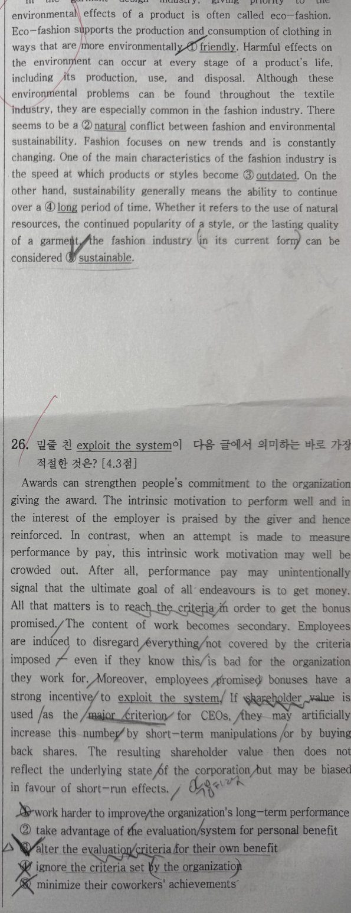
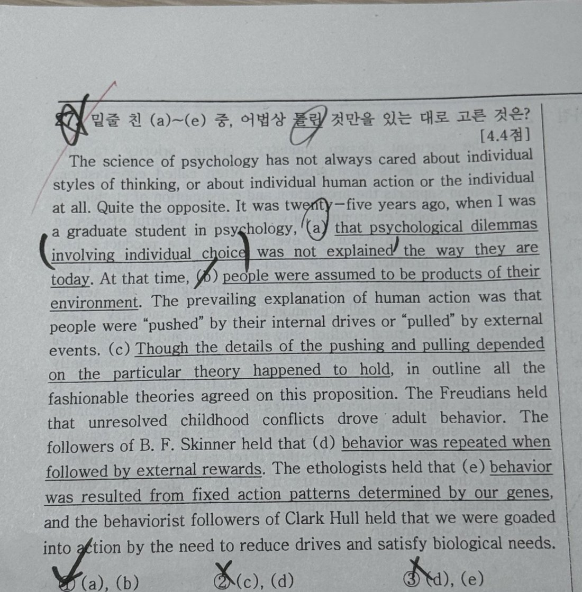
'수특 원문 암기'는 전면 패러프레이즈 48.2점 앞에서, '본문 단위 교과서 암기'는 본문 통합·차용 출제 앞에서, '밑줄 주변만 보기'는 최소 치환 어법 장치 앞에서 각각 멈춥니다.
문제 몇 세트를 더 푸는 것으로는 이 시험이 요구한 힘이 길러지지 않습니다. 다올105는 시험의 본질 — 변형 대응력과 공부 밀도 — 를 직접 훈련합니다.